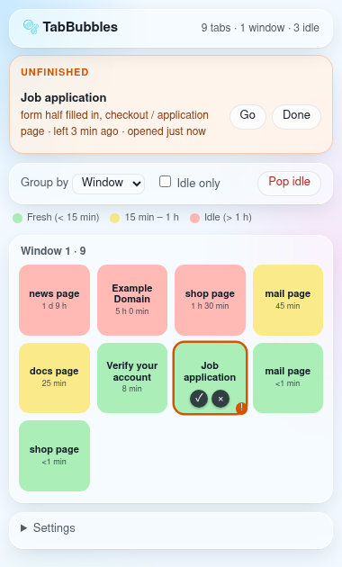
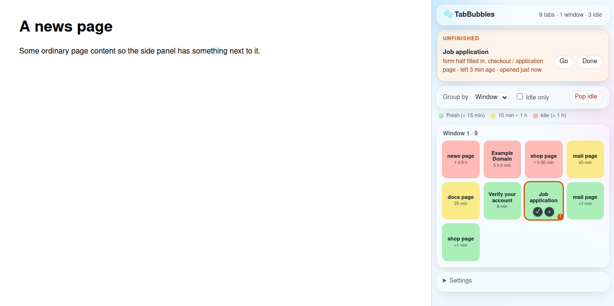
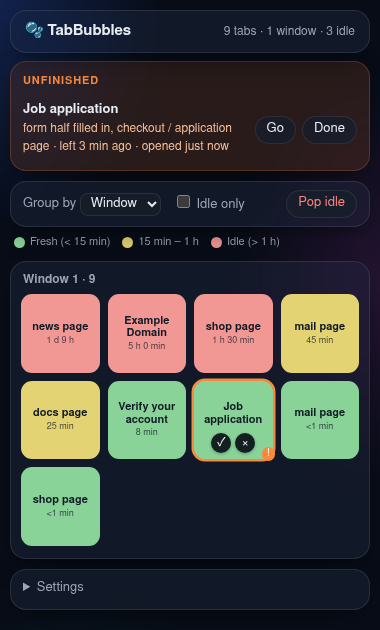

Too many tabs? See them all at a glance.标签页太多？一眼看清全部。
TabBubbles shows every open tab as a square tile in your browser's side panel, coloured by how long you have left it. Pop the ones you don't need, and get a nudge about things you left half done. TabBubbles 在浏览器右侧的侧边栏里，把每个打开的标签页变成一个彩色方块，颜色告诉你它被冷落了多久。不要的点一下就关掉，做到一半的事情它会提醒你。
Free and open source (MIT). For Chrome 121 and newer.免费、开源（MIT 协议）。适用于 Chrome 121 及以上版本。

How it works怎么用
Three steps, no account, nothing to set up.三步就好，不用注册，不用设置。
-
Click the icon点一下图标
The TabBubbles panel opens on the right side of your browser and stays open while you browse.TabBubbles 在浏览器右侧打开，一边浏览一边开着。
-
See what you forgot一眼看出被遗忘的
Every tab is a square tile, all the same size. The colour tells you how long you've left it: green, then yellow, then red.每个标签页是一个同样大小的方块。颜色告诉你多久没看了：绿色、黄色，再到红色。
-
Pop or go back关掉，或者回去
Hover a tile and press × to close that tab, or click the tile to jump straight back to it.鼠标移到方块上点 × 关掉它，或者直接点方块跳回那个标签页。

What it does能做什么
Three colours tell you where to look.三种颜色告诉你该看哪里。
! Remembers what you left half done! 记得你做到一半的事
An Unfinished list at the top shows tabs that look half done, what's left, and how long ago you left them:顶部的未完成列表会列出看起来没做完的标签页、还差什么、你多久前离开的：
- a page waiting for a verification code等着输入验证码的页面
- a form you started filling in填了一半的表单
- a checkout or application page结账或申请页面
- text you typed but never sent打了字还没发出去的文本
📌 Mark anything as a task📌 手动标成待办
Press 📌 inside any tile and add a short note, like "reply to recruiter". It joins the Unfinished list until you press Done.点方块里的 📌，写一句备注，比如"回复招聘人员"。它会留在未完成列表里，直到你点完成。
Pop one, or pop them all一个一个关，或者一次全关
× inside a tile closes that tab. Pop idle closes every idle tab at once, after asking, and skips pinned tabs, tabs playing sound and unfinished tasks.方块里的 × 关掉这个标签页。Pop idle 先问你一句，再一次关掉所有闲置标签页，固定的、正在放声音的、未完成的都不会关。
Group by window or site按窗口或网站分组
See tiles per window, per website, or all together. Idle only hides fresh tabs so you only see what needs a decision.按窗口、按网站或者全部放在一起看。只看闲置会隐藏新鲜的标签页，只留下需要你处理的。
Gentle reminders轻轻提醒
The toolbar badge counts unfinished tasks you've been away from too long, or idle tabs. You can also turn on a notification, once per task.工具栏图标上的数字显示你离开太久的未完成任务，或者闲置标签页的数量。也可以打开系统通知，每个任务只提醒一次。
Light and dark浅色和深色
Light by default, and dark when your computer is in dark mode. Works with the keyboard too: Tab to a tile, Enter to open it, Delete to close it.默认浅色，电脑切到深色模式时自动变深色。也可以用键盘：Tab 选中方块，回车打开，Delete 关掉。

Your tabs stay yours你的标签页只属于你
TabBubbles has no server, no account and no analytics.TabBubbles 没有服务器、不用账号、不做任何统计。
- Everything is stored in your own browser.所有数据都只存在你自己的浏览器里。
- Nothing about your tabs or pages is sent anywhere.你的标签页和网页内容不会发送到任何地方。
- To spot unfinished pages it only checks whether fields are empty or filled in; what you typed is never stored or sent.为了发现没做完的页面，它只看输入框是空的还是填了，你输入的内容不会被保存或发送。
- The code is open source (MIT), so anyone can check it.代码开源（MIT），谁都可以检查。
Install in about a minute一分钟装好
TabBubbles isn't in the Chrome Web Store yet, so you load it yourself:TabBubbles 还没上架 Chrome 应用商店，所以需要手动加载：
- Download
tabbubbles-v0.1.0.zipfrom the latest release and unzip it.从 最新版本页面下载tabbubbles-v0.1.0.zip并解压。 - Open
chrome://extensionsand switch on Developer mode (top right).打开chrome://extensions，打开右上角的开发者模式。 - Click Load unpacked and pick the unzipped folder (the one with
manifest.json).点加载已解压的扩展程序，选择解压后的文件夹（里面有manifest.json）。 - Pin TabBubbles from the puzzle-piece menu, then click its icon.在拼图图标菜单里把 TabBubbles 固定到工具栏，然后点它的图标。
| Browser浏览器 | Status状态 |
|---|---|
| Chrome 121+ | ✅ Tested✅ 已测试 |
| Edge, Brave | Should work, not tested yet应该可以用，还没测试 |
| Firefox, Safari | Not supported yet暂不支持 |
FAQ
Short answers to common questions.常见问题。
Is it free?要钱吗？
Yes. TabBubbles is free and open source under the MIT licence.不要钱。TabBubbles 免费，并以 MIT 协议开源。
Does closing a tile lose my tab?关掉方块，标签页就没了吗？
Yes, × closes that tab, the same as closing it in the tab bar. Pop idle asks first and never closes pinned tabs, tabs playing sound or unfinished tasks.是的，× 会关掉这个标签页，和在标签栏里关掉一样。Pop idle 会先问你，并且不会关固定的、正在放声音的和未完成的标签页。
Can I change when a tab counts as idle?能改"闲置"的时间吗？
Yes. In Settings at the bottom of the panel, set the idle time (1 hour by default) and when to be reminded about unfinished tasks. The colours follow your setting.可以。在侧边栏底部的设置里改闲置时间（默认 1 小时）和未完成任务的提醒时间，颜色会跟着变。
Why does it ask to access the sites I visit?为什么要访问我打开的网站？
So it can notice an unfinished page, like an empty verification-code box or a half-filled form. That check happens on your computer and nothing is sent anywhere.为了发现没做完的页面，比如空的验证码框或填了一半的表单。这个检查只在你的电脑上进行，不会发送任何内容。
Is it in the Chrome Web Store?在 Chrome 应用商店里吗？
Not yet. For now, install it with the four steps above.还没有。目前请按上面四步安装。